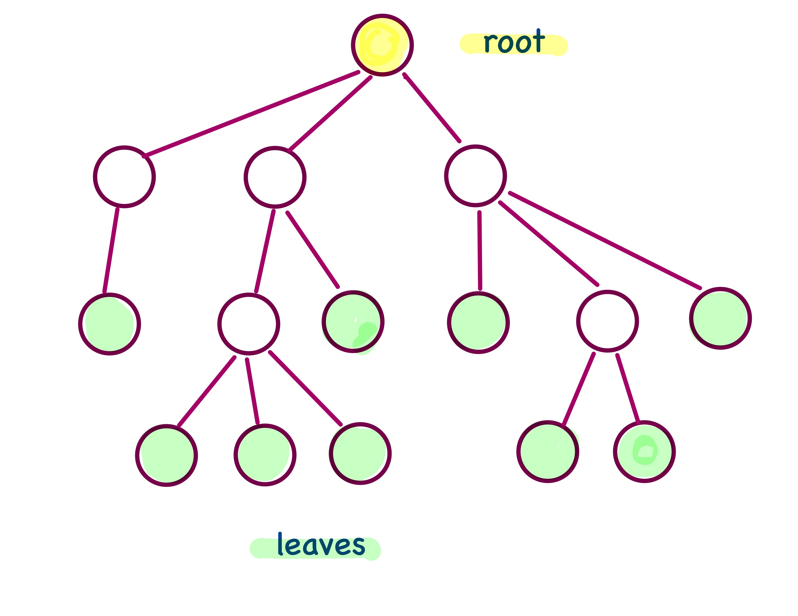
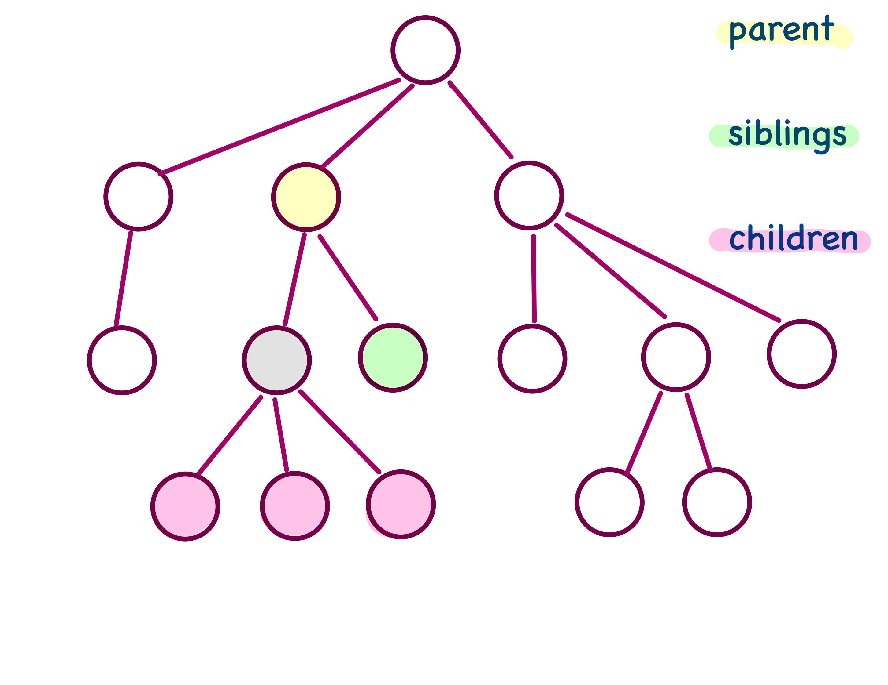
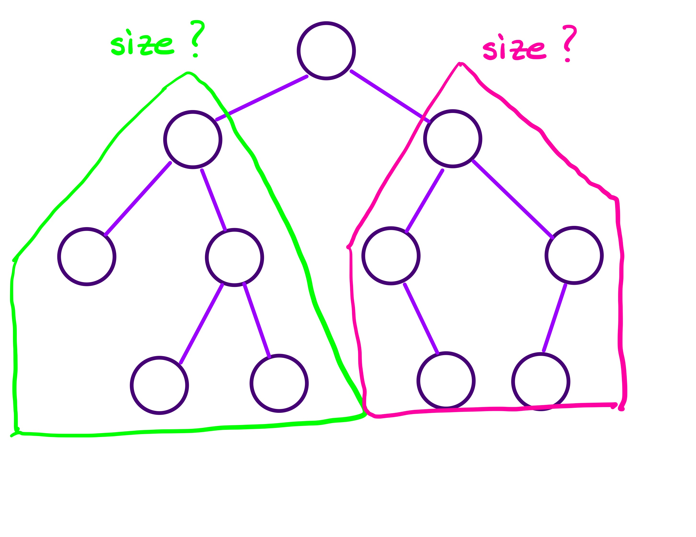
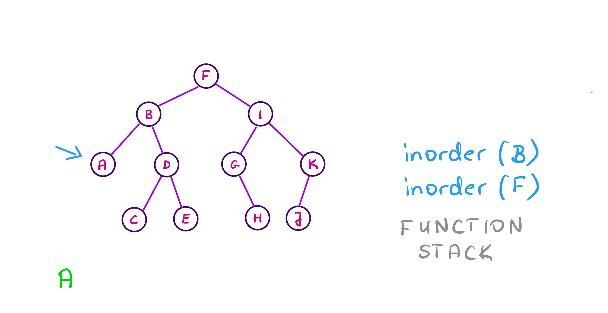
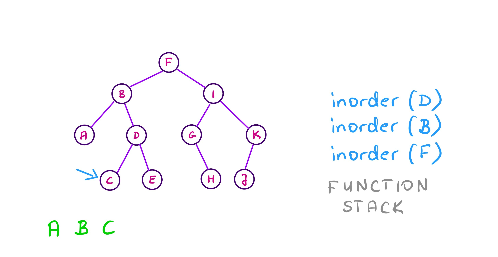
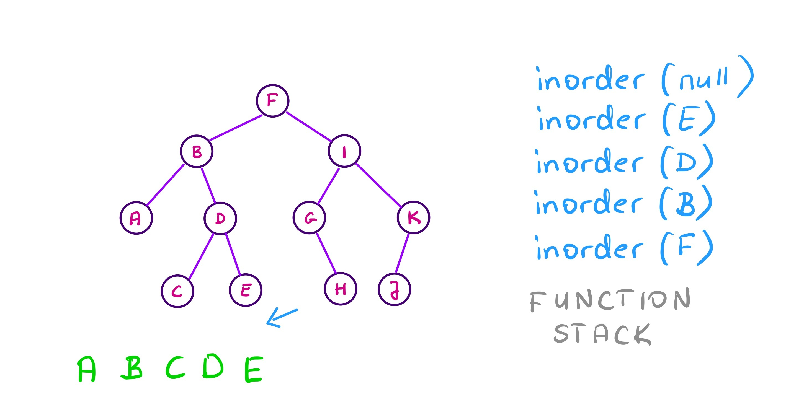
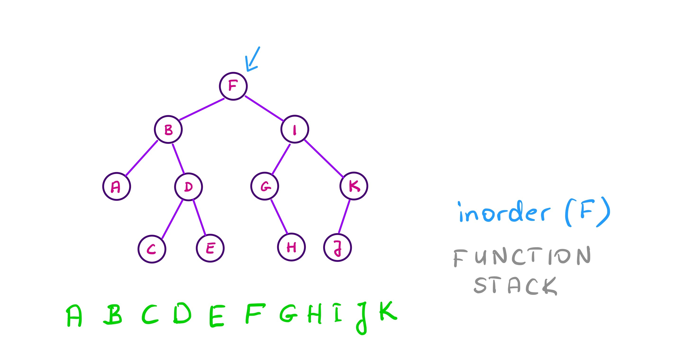
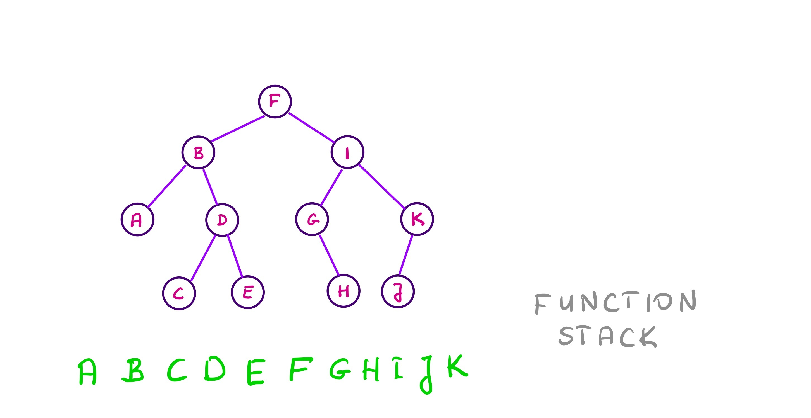

class: center, middle, title-slide # CSCI-UA 102 ## Data Structures <br> ## Trees - Introduction .author[ Instructor: Joanna Klukowska <br><br><br> ] .license[ Copyright 2020 Joanna Klukowska. Unless noted otherwise all content is released under a <br> [Creative Commons Attribution-ShareAlike 4.0 International License](https://creativecommons.org/licenses/by-sa/4.0/).<br> Background image by Stewart Weiss<br>] --- layout:true template: default name: section class: inverse, middle, center --- layout:true template: default name: breakout class: breakout, middle --- layout:true template:default name:slide class: slide .bottom-left[© Joanna Klukowska. CC-BY-SA.] --- template: section # Trees --- template: slide ## Not These Types of Trees .left-column2[ <a title="(RNBC) member at en.wikipedia, CC BY-SA 3.0 <http://creativecommons.org/licenses/by-sa/3.0/>, via Wikimedia Commons" href="https://commons.wikimedia.org/wiki/File:Olea_europaea_subsp_europaeaOliveTree.jpg"> <img width="350" alt="Olea europaea subsp europaeaOliveTree" src="https://upload.wikimedia.org/wikipedia/commons/thumb/2/25/Olea_europaea_subsp_europaeaOliveTree.jpg/512px-Olea_europaea_subsp_europaeaOliveTree.jpg"> </a> <a title="Wing-Chi Poon, CC BY-SA 2.5 <https://creativecommons.org/licenses/by-sa/2.5>, via Wikimedia Commons" href="https://commons.wikimedia.org/wiki/File:Contrasting_Tree_Types_Coexist_in_a_Forest.jpg"> <img style="transform:translateX(200px)translateY(-10px)" width="400" alt="Contrasting Tree Types Coexist in a Forest" src="https://upload.wikimedia.org/wikipedia/commons/thumb/6/62/Contrasting_Tree_Types_Coexist_in_a_Forest.jpg/512px-Contrasting_Tree_Types_Coexist_in_a_Forest.jpg"></a> ] .right-column2[ <a title="Jdforrester, CC BY-SA 3.0 <http://creativecommons.org/licenses/by-sa/3.0/>, via Wikimedia Commons" href="https://commons.wikimedia.org/wiki/File:Willow.jpg"> <img style="transform:translateX(50px)translateY(0px)" width="256" alt="Willow" src="https://upload.wikimedia.org/wikipedia/commons/thumb/b/b8/Willow.jpg/256px-Willow.jpg"></a> ] --- ## These Types of Trees .left-column2[ <a title="Sertion, CC0, via Wikimedia Commons" href="https://commons.wikimedia.org/wiki/File:Binary_tree_simplified.svg"> <img width="350" alt="Binary tree simplified" src="https://upload.wikimedia.org/wikipedia/commons/thumb/4/46/Binary_tree_simplified.svg/512px-Binary_tree_simplified.svg.png"></a> <a title="Ppgardne, CC BY-SA 4.0 <https://creativecommons.org/licenses/by-sa/4.0>, via Wikimedia Commons" href="https://commons.wikimedia.org/wiki/File:Standard-unix-filesystem-hierarchy.svg"> <img style="transform:translateX(100px)translateY(0px)" width="550" alt="Standard-unix-filesystem-hierarchy" src="https://upload.wikimedia.org/wikipedia/commons/thumb/f/f3/Standard-unix-filesystem-hierarchy.svg/512px-Standard-unix-filesystem-hierarchy.svg.png"></a> ] .right-column2[ <a title="Paddy3118, CC BY-SA 4.0 <https://creativecommons.org/licenses/by-sa/4.0>, via Wikimedia Commons" href="https://commons.wikimedia.org/wiki/File:Tree_(computer_science).svg"> <img style="transform:translateX(50px)translateY(-40px)" width="256" alt="Tree (computer science)" src="https://upload.wikimedia.org/wikipedia/commons/thumb/5/5f/Tree_%28computer_science%29.svg/256px-Tree_%28computer_science%29.svg.png"></a> ] --- template: section # Trees - Names and Definitions --- ## Trees - Names and Definitions .left-column2[ A __tree__ is a structure in which each node can have multiple successors (unlike the linear structures that we have been studying so far, in which each node always had at most one successor). ] .right-column2[.center[ ]] -- .left-column2[.center[ ]] .right-column2[ The first/top node in a tree s called a __root__, it is often called the top level node (YES, in computer science root of a tree is at the top of a tree). ] -- .below-column2[ ] .left-column2[ An __edge__ in a tree is formed by a pair of nodes such that one is a parent of the other. A __path__ in a tree is a sequence of nodes such that any two consecutive nodes form an edge. ] .right-column2[.center[ ]] --- ## Trees - Names and Definitions In a tree, there is always a __unique path__ from the root of a tree to every other node in a tree - this has an important consequence: there are no cycles in a tree (think of a cycle as a closed path that allows us to go in a cycle infinitely many times). --- ## Trees - Names and Definitions .left-column2[ The nodes at the end of each path that leads from root downwards are called __leaves__. The other way to think about it is that leaves are the nodes that do not point to any other nodes (or point only to null). In a linear structure there was only one such a node indicating the end of the list. In trees we have many such nodes. ] -- .center[  ] -- .left-column2[ The leaf nodes are also called __external nodes__ in contrast to all the other non-leaf nodes that are called __internal nodes__. ] -- .center[ ] --- ## Trees - Names and Definitions Any node within a tree can be viewed as a root of its own __subtree__ - just take any node, cut of the branch/edge that connects above to the rest of a tree, and it becomes a root with a smaller (possibly empty) tree of its own. .center[ ] -- Each _bubble_ encloses a different subtree with a different node as its root. -- There are as many subtrees in a tree as there are nodes. --- name: parent_child_sibling ## Trees - Names and Definitions Given a node in a tree, its successors (nodes connected to it in a level below) are called its __children__. Given a node in a tree, its predecessor (node that connects to it in a level above - there is only one such node) is called its __parent__. The nodes that share the same parent node, are called __siblings__. -- .center[  ] --- template: parent_child_sibling .center[ A _leaf_ node does not have any children nodes. ] --- template: parent_child_sibling .center[ The _root_ node does not have a parent node and no sibling nodes. ] --- name: ascendants-descendants ## Trees - Names and Definitions __Descendants__ of a node are its children, and the children of its children, and the children of the children of its children, and ... - all the nodes below that are connected to that node. (In some definitions, the node itself is its own descendant.) __Ascendants__ of a node are its parent, and the parent of the parent, and ... - all the nodes along the path from itself to the root. (In some definitions, the node itself is its own ascendant.) -- .center[ ] --- template: ascendants-descendants .center[ ] --- template: ascendants-descendants .center[ A _leaf_ node has no descendants. ] --- template: ascendants-descendants .center[ The _root_ node has no ascendants and all nodes are its descendants. ] --- ## Trees - Names and Definitions .left-column2[ The __level__ of a node refers to the distance of a node from the root. Root is a distance zero from itself, so the __level of the root is 0__ (or root is at level zero in the tree). Children of the root are at level 1, ”grandchildren” or children of the children of the root are at level 2, etc. ] .right-column2[ .center[ ]] -- .left-column2[.center[ ] ] .right-column2[ The __depth of a node__ is the number of ascendants of that node in a tree (or the number of levels above the node). ] -- .right-column2[ The __depth of a tree__ is equal to the level of the deepest node. The depth of the tree on the left is 3. ] --- ## Trees - Names and Definitions The __height of a tree__ is calculated from the leaves up to the root. - The leaf-nodes have a height of zero. - For the internal nodes, the height is calculated as one more than the maximum of the heights of its children. The height of a tree is the height of the root. (In some definitions, the height of the leaf nodes is defined to be one, not zero.) -- .center[ ] --- ## Trees - Names and Definitions In general trees the order of the children does not really matter. A __tree is ordered__ when the ordering of children is relevant. -- .center[ ] --- template: section # Binary Trees --- name: binary-tree ## Binary Trees A __binary tree__ is a special kind of tree in which each node can have at most two children: they are distinguished as a left child and a right child. -- .center[ ] --- template: binary-tree The order of the nodes matters (we cannot just swap left and right), so it is an ordered tree. .center[ ] --- template: binary-tree name: left-right-subtree The subtree rooted at the left child of a node is called its __left subtree__ and the subtree rooted at the right child of a node is called its __right subtree__. -- .center[ ] --- template: left-right-subtree .center[ ] --- template: left-right-subtree .center[ ] --- ## Binary Trees - In binary trees there are at most $2^{L}$ nodes at level $L$. -- - Given N nodes, the _shortest_ binary tree that we can construct has $\left\lfloor \log_{2}N\right\rfloor +1$ levels. We will come back to this idea when we talk about efficiency of trees. -- - Given N nodes, the _tallest_ binary tree that we can construct has N levels (numbered from 0 to N-1). Why? -- - In a __full binary tree__ each level has maximal possible number of nodes. -- - In a __complete binary tree__ with $L$ levels, the levels $0\leq l\leq L-1$ have the maximal number of nodes, i.e., $2^{l}$, and the nodes at level $L$ are placed as far left as possible. --- template: section #Nodes and How They Connect --- name: binary-node ## Node Structure - Binary Tree The node of a binary tree needs to store a data item and references to its children. (Optionally, it may also store a reference to its parent.) .left-column2-small[.small[ ``` class BTNode <E> { E data; BTNode <E> left; BTNode <E> right; //constructors //and methods as needed ... } ``` ]] -- .center[ ] --- template: binary-node .center[ ] --- template: binary-node .center[ ] --- name: general-node ## Node Structure - General Tree In a _general tree_ we do not know the maximum degree that a tree may have ( the largest number of children per node), and because it is inefficient to create a structure with a very large fixed number of child entries, most implementations of a general tree use a linked list of siblings and a single child, as follows. .left-column2-small[.small[ ``` class TreeNode <E>{ E data TreeNode<E> firstChild; TreeNode<E> nextSibling; //constructors //and methods as needed ... } ``` ]] -- .center[ ] --- template: general-node .center[ ] --- template: general-node .center[ ] --- template: section # Computing Size of a Tree --- ## Size of a Tree Computing a size of a tree means counting all the nodes. Trees are inherently recursive structures: if we pick any node in a tree and disconnect it from its parent, we are still left with a tree (a smaller one, but a tree). This makes recursive algorithms very intuitive. -- __Note__ <br/> Any reasonable tree implementation would keep a `size` variable, not compute it every time that it is needed. But the methodology used in writing a `size()` method is similar to what we will need for other algorithms. --- ## Binary Tree Size How are we going to compute the number of nodes in the tree? -- name: size-binary - If the tree has no nodes, then its size is zero. - If the tree has at least one node it is the root node. - we can _ask_ its left child for the size of the subtree rooted at the left child - we can _ask_ its right child for the size of the subtree rooted at the right child - add one (for the root node itself) to the sum of the above values -- .right-column2[ .center[ <img width="350px" alt="size of a binary tree" src="img/10/size-48.jpg"> ] ] --- template: size-binary .right-column2[ .center[ <img width="350px" alt="size of a binary tree" src="img/10/size-24.jpg"> ] ] --- template: size-binary .right-column2[ .center[  ] ] --- template: size-binary .right-column2[ .center[ ] ] -- This gives us total number of nodes in the tree. Here is the pseudocode for recursive algorithm for the size method of a binary tree: ``` int size () return size( root) int size ( BTNode<E> root ) if root == null return 0 else return size(root.left) + size(root.right) + 1; ``` --- ## Binary Tree Size - Iterative - When we looked at iterative and recursive implementations of the size method for the linked list they were not significantly different in complexity of the code and, at least for some of us, the iterative method was a bit more intuitive. .left-column2[ ``` int size () { Node current = head; int counter = 0; while (current!=null){ counter++; current = current.next ; } return counter; } ``` ] .right-column2[ ``` int size () { return size(head); } int size (Node n) { if (n == null) return 0; return 1 + size(n.next); } ``` ] -- .below-column2[ ] - The iterative algorithm for computing a size of a binary tree is much more complex (in terms of code) than its recursive equivalent. --- ## Binary Tree Size - Iterative - An iterative algorithm for size of a binary tree needs to keep track of which branches have been explored (i.e., counted) and which ones still need to be processed. Since each node can have up to two children nodes, there is a potential branch at every single node. -- - Here is the pseudocode for the iterative implementation of a size method. ``` int size ( ) counter = 0 if tree is not empty (root is not null) create an empty stack stack.push( the root of this tree ) while stack is not empty current = stack.pop() counter = counter + 1 if current has a left child stack.push( left child ) if current has a right child stack.push( right child ) return counter ``` -- - The stack allows us to put the unexplored nodes on hold while we explore other nodes. An empty stack indicates that all the nodes in the tree have been counted (or that we have a bug in our code, but lets be optimistic). -- - Can you think of a way of writing the iterative algorithm using a queue? --- ## Iterative Algorithm in Action .left-column2[ .smaller[ ``` int size ( ) counter = 0 if tree is not empty (root is not null) create an empty stack stack.push( the root of this tree ) while stack is not empty current = stack.pop() counter = counter + 1 if current has a left child stack.push( left child ) if current has a right child stack.push( right child ) return counter ``` ] <br/><br/> .center[ ] ] .right-column2[ .smaller[ {{content}} ] ] -- `counter: 0 current: - stack: [A]` {{content}} -- `counter: 1 current: A stack: [B, C]` {{content}} -- `counter: 2 current: C stack: [B, F, G]` {{content}} -- `counter: 3 current: G stack: [B, F, K]` {{content}} -- `counter: 4 current: K stack: [B, F]` {{content}} -- `counter: 5 current: F stack: [B, J]` {{content}} -- `counter: 6 current: J stack: [B]` {{content}} -- `counter: 7 current: B stack: [D, E]` {{content}} -- `counter: 8 current: E stack: [D, H, I]` {{content}} -- `counter: 9 current: I stack: [D, H]` {{content}} -- `counter: 10 current: H stack: [D]` {{content}} -- `counter: 11 current: D stack: []` --- template:breakout ### General Tree Size Using ideas that we discussed for a binary tree size calculation, write a recursive algorithm that determines the size of a general tree. .small[ Keep in mind the structure of the node for a general tree and the fact that the logical representation of the tree is somewhat different than the actual memory level representation (i.e., the parent node does not have references to all of its children nodes). ] .center[ ] --- template: section # Traversing a Binary Tree --- ## Tree Traversal We often need to perform an operation on every node in a tree and sometimes the order matters. There are multiple approaches to tree traversals and we will discuss three of them: - inorder, - preorder, and - postorder. --- ## Inorder Traversal The __inorder traversal__ visits the left subtree, then the node, then the right subtree. (You will discover why it is caller _inorder_) once we look at a binary search tree. -- The algorithm for this traversal is as follows: ``` process all nodes in a tree starting at a given node (initially node=root): - process the nodes in the left subtree of a node - process the node itself - process the nodes in the right subtree of a node ``` The algorithm stops when the subtrees are empty. -- In the above, the word _process_ is intentionally vague. The actual action depends on what exactly we need to do. If we want to print the content of the binary tree, then _process_ means _print_. If we need to perform some other computation based on the data stored in the nodes, then _process_ means _perform the computation_. --- ## Recursive vs. Iterative implementation Here is the pseudocode for a recursive inorder traversal algorithm. ``` inorder ( BTNode<E> node ) if node is not null inorder( node.left ) process the node inorder( node.right ) ``` -- .left-column2-large[ ----- Here is the pseudocode for an iterative inorder traversal algorithm. ``` inorder ( ) if tree is not empty (root is not null) create an empty stack current = root of this tree done = false while not done if current is not null stack.push( current ) current = current.left else if stack is not empty current = stack.pop() process current current = current.right else done = true ``` ] -- .right-column2-small[.small[ The iterative approach is significantly different and requires an extra data structures to keep track of all the nodes ”on hold”: as we descend down the tree, we need to keep track of all the nodes on the way so we know where to return. We make use of a stack to _remember_ the nodes. (In a recursive solution, the function stack _remembers_ the nodes along the way.) ] ] --- name: inorder ## Recursive Inorder Traversal in Action -- template: inorder <br/><br/> .center[ ] --- template: inorder <br/><br/> .center[ ] --- template: inorder <br/><br/> .center[ ] --- template: inorder <br/><br/> .center[ ] --- template: inorder <br/><br/> .center[ ] --- template: inorder <br/><br/> .center[ ] --- template: inorder <br/><br/> .center[ ] --- template: inorder <br/><br/> .center[  ] --- template: inorder <br/><br/> .center[ ] --- template: inorder <br/><br/> .center[ <img width="800px" alt="inorder traversal" src="img/10/inorder-11.jpg"> ] --- template: inorder <br/><br/> .center[ ] --- template: inorder <br/><br/> .center[ ] --- template: inorder <br/><br/> .center[ ] --- template: inorder <br/><br/> .center[ ] --- template: inorder <br/><br/> .center[  ] --- template: inorder <br/><br/> .center[ ] --- template: inorder <br/><br/> .center[ ] --- template: inorder <br/><br/> .center[ ] --- template: inorder <br/><br/> .center[ ] --- template: inorder <br/><br/> .center[  ] --- template: inorder <br/><br/> .center[ ] --- template: inorder <br/><br/> .center[ ] --- template: inorder <br/><br/> .center[ ] --- template: inorder <br/><br/> .center[ ] --- template: inorder <br/><br/> .center[ ] --- template: inorder <br/><br/> .center[ ] Complete the remaining steps for the right-subtree of the root. --- template: inorder <br/><br/> .center[  ] --- template: inorder <br/><br/> .center[  ] --- ## Preorder Traversal In the __preorder traversal__ of the tree, we visit the node before exploring its children (left then right). -- The pseudocode for a recursive preorder traversal algorithm does not differ much from the inorder version - the only difference comes in when the node itself is processed: ``` preorder ( BTNode<E> node ) if node is not null process the node preorder( node.left ) preorder( node.right ) ``` --- ## Postorder Traversal In the __postorder traversal__ of the tree, we visit the node after exploring its children (left then right). -- The pseudocode for a recursive postorder traversal algorithm is as follows: ``` postorder ( BTNode<E> node ) if node is not null postorder( node.left ) postorder( node.right ) process the node ``` --- template:section # Examples and Things to Think About --- ## Iterative `size` with a Queue Replace the stack in the iterative implementation of the `size()` method with a queue. - Does it still count all the nodes? - Trace this modified method on the same tree that we used to trace the method that used a stack. - What changes compared to the implementation that uses the stack? --- ## Trace Iterative Inorder Traversal For the iterative `size()` implementation, we traced what happens (i.e., value of variables and stack content) for each iteration when `size()` was called on a particular tree. Create a trace like that for the iterative inorder traversal implementation. --- ## Iterative Pre- and Postorder Traversals Provide an iterative algorithm for the preorder and postorder traversals. HINT: this is similar to the inorder traversal. --- ## Iterative `inorder` with a Queue Replace the stack in the iterative implementation of the `inorder()` method with a queue. - Does it still produce the _inorder_ traversal of the tree? - List the nodes in the order that this revised algorithm "processes" them. --- ### Tree Traversals Specify the inorder, preorder and postorder traversals of the follow tree: .center[ ] - What is the fifth node visited in the inorder/preorder/postorder traversal? - Which node is visited after I in the inorder/preorder/postorder traversal? --- ### Tree Reconstruction Assume that the preorder traversal of a BST is: A, B, D, E, H, I, C, F, J, G, K. For the same tree, the inorder traversal is: D, B, H, E, I, A, F, J, C, K, G. Can you _reconstruct_ the tree? </optgroup>